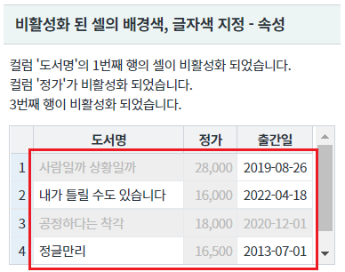
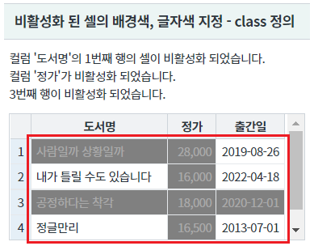
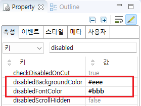

GridView의 비활성화 된 셀의 배경색과 글자색을 지정하는 예제입니다. 이 기능은 속성 disabledBackgroundColor, disabledFontColor에 지정하여 사용할 수 있습니다. 또는 class 'w2grid_default_disabled'를 재정의하여 지정할 수도 있습니다.
비활성화 된 셀의 배경색, 글자색 지정 - 속성
비활성화 된 셀의 배경색, 글자색 지정 - class 정의
영역 [비활성화 된 셀의 배경색, 글자색 지정 - 속성]의 GridView를 확인합니다.
컬럼 '도서명'의 1번째 행의 셀이 비활성화 되었습니다.
컬럼 '정가'가 비활성화 되었습니다.
3번째 행이 비활성화 되었습니다.
셀의 배경색과 글자색이 기본 스타일과 다르게 지정되어 있습니다.
[브라우저(Chrome) 실행 예시]

영역 [비활성화 된 셀의 배경색, 글자색 지정 - class 정의]의 GridView를 확인합니다.
컬럼 '도서명'의 1번째 행의 셀이 비활성화 되었습니다.
컬럼 '정가'가 비활성화 되었습니다.
3번째 행이 비활성화 되었습니다.+ 셀의 배경색과 글자색이 기본 스타일과 다르게 지정되어 있습니다.
[브라우저(Chrome) 실행 예시]

GridView의 속성을 정의합니다.
[필수] disabledBackgroundColor="설정값" //비활성화된 셀 또는 행의 배경색
예시1) disabledBackgroundColor="#eee"
예시2) disabledBackgroundColor="blue"
[필수] disabledFontColor="설정값" //비활성화된 셀 또는 행의 배경색
예시1) disabledFontColor="#bbb"
예시2) disabledFontColor="yellow"
그림 1.웹스퀘어5 SP5 스튜디오의 Property View(속성창) 예시

[소스 코드 예시]
<!-- gridView 의 소스 본문 예시 --> <w2:gridView disabledBackgroundColor="#eee" disabledFontColor="#bbb" dataList="data:dlt_books" id="grd_exam1" style="height:100px;"> <!-- 중략 --> </w2:gridView>
프로젝트에서 import하고 있는 CSS 파일에 아래와 같이 class를 정의합니다.
이 예제에서 사용할 class는 'w2grid_default_disabled' 입니다.
이 class는 비활성화 된 cell에 추가됩니다. (element의 td에 추가)
기 선언된 공통 class의 selector 우선 순위에서 밀릴 수 있기 때문에 구체적으로 선언하는 것이 좋습니다.
이 예제는 이 예제에서만 동작되도록 GridView의 class 속성에 'P00189_exam2'를 추가하였습니다.
[소스 코드 예시 1]
/* 프로젝트 전체에 적용하는 경우 아래와 같이 정의합니다. */ .w2grid_default_disabled {background-color: #808080 !important; color: #A9A9A9 !important;}
[소스 코드 예시 2]
/* 이 예제 파일에서 사용한 class는 다음의 경로에서 확인할 수 있습니다. */ /* [프로젝트 경로]/WebContent/css/example.css */ /* P00189.xml 예제 */ .P00189_exam2 .w2grid_default_disabled {background-color: #808080 !important; color: #A9A9A9 !important;}
disabledBackgroundColor
disabledFontColor
setCellDisabled( rowIndex , colIndex , disabled )
setColumnDisabled( colIndex , disabled )
setRowDisabled( rowIndex , disableFlag )
[웹스퀘어5 SP5 개발 가이드] GridView
링크 : https://docs1.inswave.com/sp5_user_guide/bc10c1b82c9a2a0b#e1c4658baf7e726f